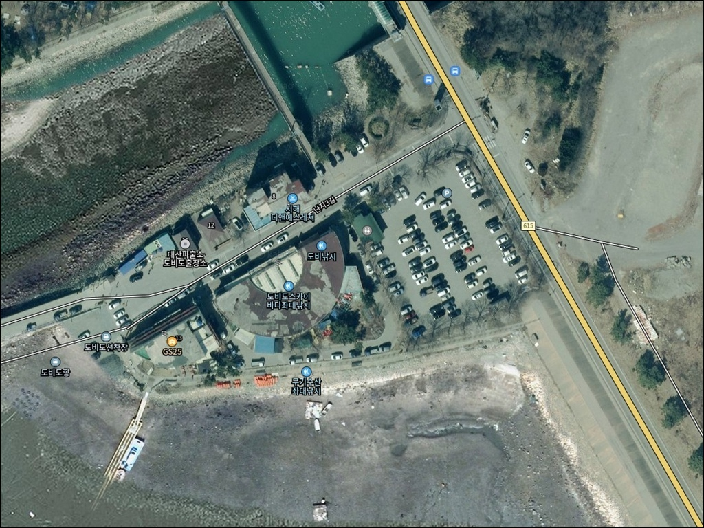
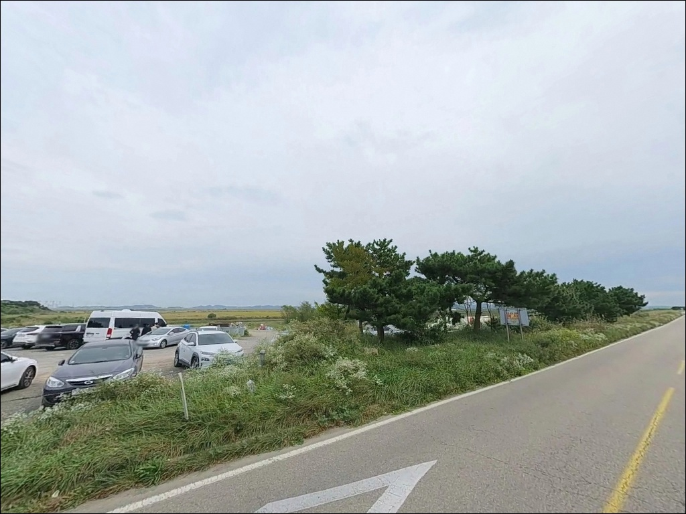
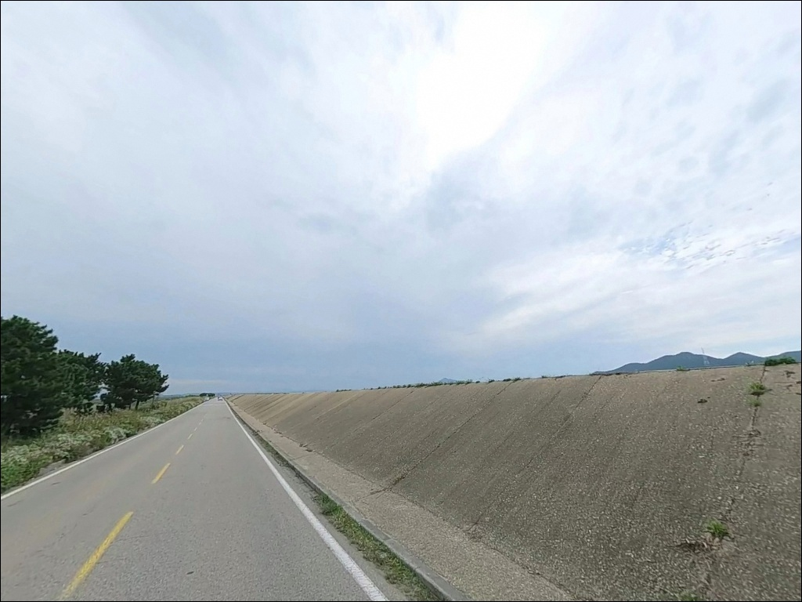
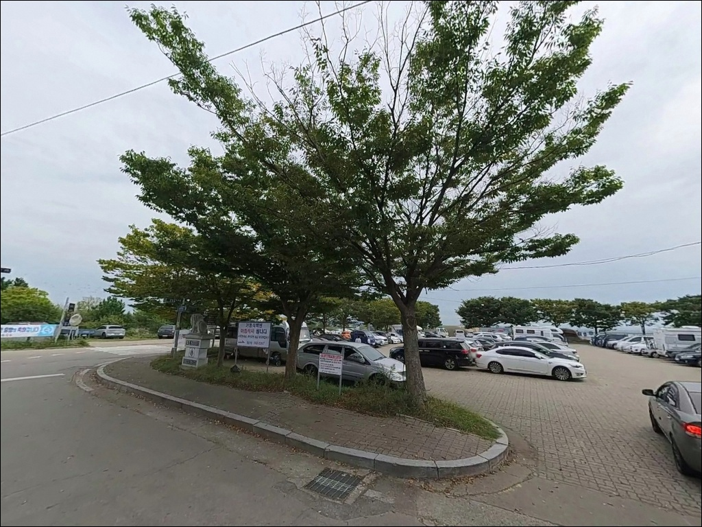
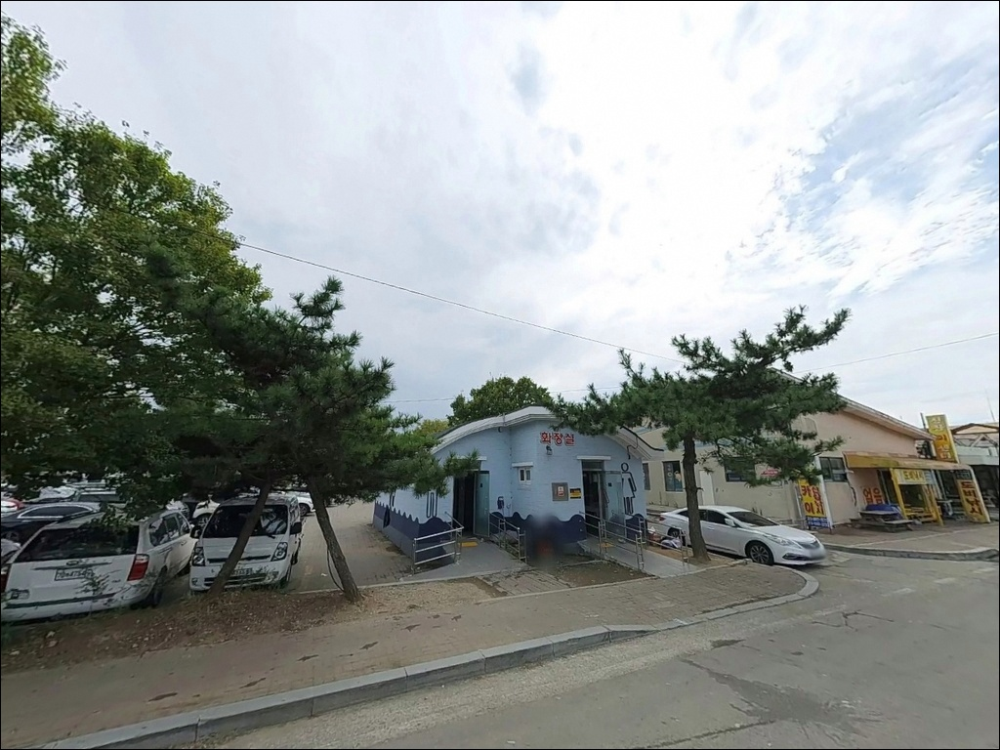
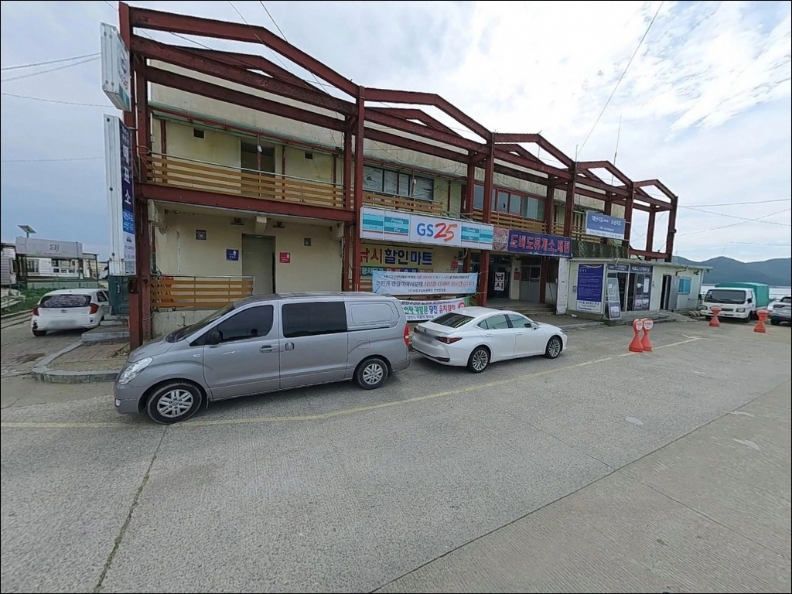
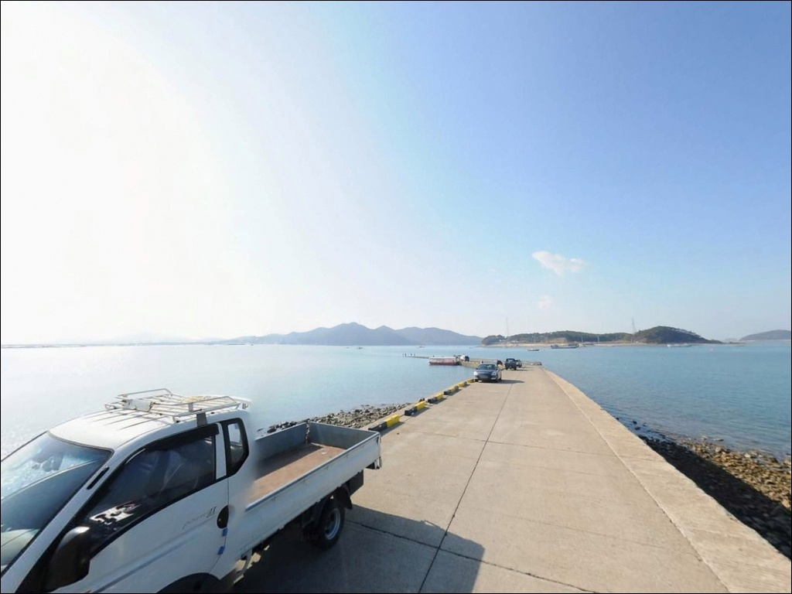
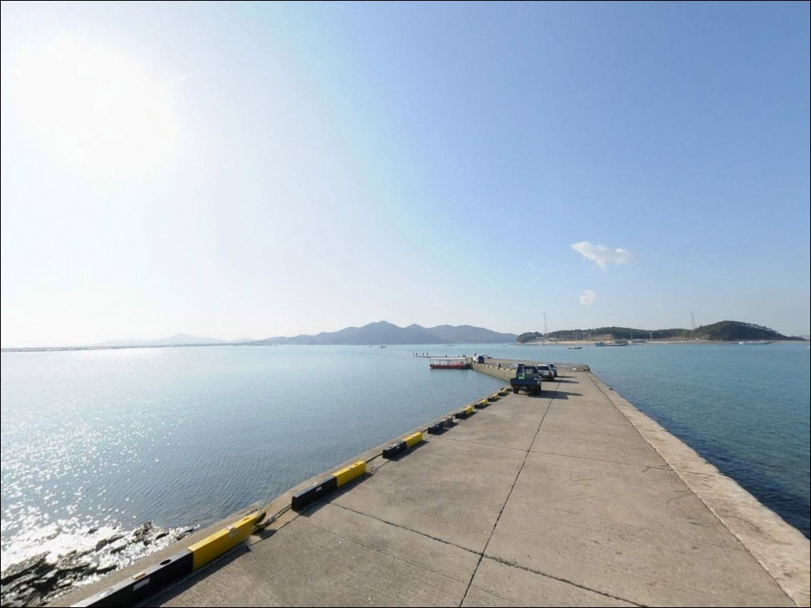
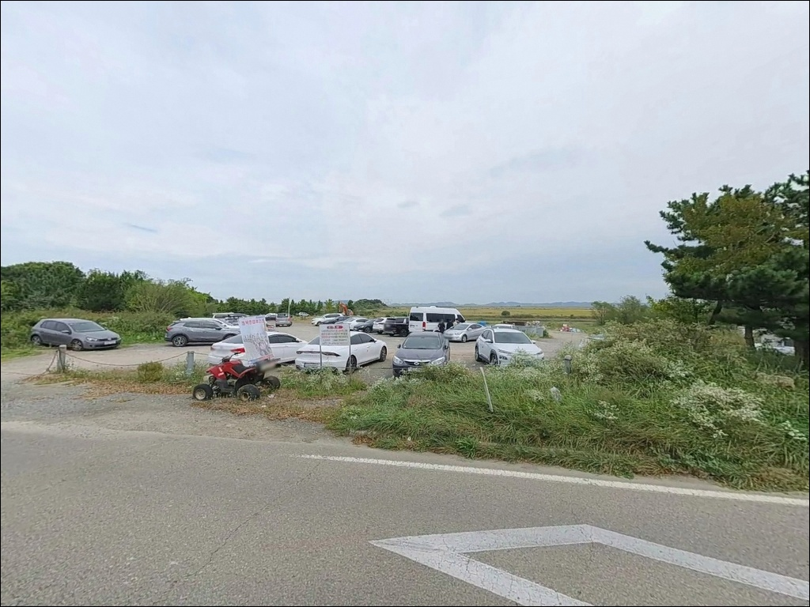

도비도항, 도비도선착장, 충남 당진시 고요한 수면을 바라보며 차박, 낚시를 즐기기 좋은 해안
이 페이지에는 광고(제휴 링크 포함)가 있으며, 광고 링크를 통해 구매하면 운영자가 판매 수익 또는 수수료를 받을 수 있습니다. 포인트 사진: 카카오맵 스카이뷰·로드뷰. 이 페이지의 지도·사진 이미지는 카카오맵의 실제 서비스 이미지와 다를 수 있습니다.


포인트 안내
도비도항
충남 당진시 석문면 난지도리 560
방파제 낚시 포인트로만 생각하고 도비도항을 찾는다면
현장에서 예상과 다른 분위기를 맞닥뜨릴 수 있습니다.
이 항구는 바다 좌대낚시 업체들의 출항 기지로 운영되는 곳이라,
선착장 여건은 배를 타고 나가는 방식 중심으로
돌아가는 구조입니다.
충남 당진시 석문면 난지도리,
1984년 대호방조제 완공으로 내륙과 연결된 도비도항은
난지도행 여객선이 출항하는 선착장 역할을 겸하고 있습니다.
서해 갯벌과 방조제가 맞닿은 포구 구조로,
복수의 좌대낚시 업체가 이 항을 거점으로
삼아 운영 중입니다.
이 글은 도비도항의
진입 동선, 낚시 여건, 좌대낚시 이용 조건,
차박 체류 환경에 집중합니다.
조황 단정이나 시설 운영 확정 정보는
이 글의 범위에 포함되지 않습니다.

1. 포인트 위치 및 진입 동선 분석
대호방조제로 내륙과 연결되어 있어
도비도항까지 포장도로로 차량 진입이 가능합니다.
주 진입로인 대호만로를 통해
항구 바로 앞까지 접근할 수 있는 구조이며,
관광지 연계 도로라
일반 농어촌 지방도에 비해 도로 여건이 나은 편입니다.
대형 SUV나 캠핑 장비를 갖춘 차량도
진입에 큰 어려움은 없는 편입니다.
항 주변 공터가 비교적 넓은 구조로 추정되어
회차 가능성도 있으나,
선착장 접안 구역 주변은
어선·여객선 운항 동선과 겹칠 수 있으므로
주차 위치는 현장에서 먼저 확인하는 것이 좋습니다.
내비게이션에 "도비도항" 또는
주소를 직접 입력해 접근하는 방식이
초행길에는 더 정확합니다.
여객선 출항 시간대에는 승선객 차량이 몰릴 수 있어,
이 시간대를 피해 도착하면
주차 여건이 훨씬 여유로운 편입니다.

2. 차박 환경 평가 및 야간 체류 여건
도비도항 주변은 회센터와 관광단지가 인접한 구조라
완전한 오지 분위기는 아닙니다.
낚시·차박 이용자가 꾸준히 찾는 곳이라
야간에도 인근 차량 왕래가 어느 정도 있을 가능성이 있어,
프라이버시를 중시한다면 자리 선택을 신중하게
해야 합니다.
방조제 방향 쪽은 탁 트인 서해 조망이 가능한 편입니다.
서쪽이 개방된 지형이라
바람 영향을 받기 쉬운 구조이며,
바람이 강한 날에는 방조제보다
선착장 주변 공터 쪽이
체류 안정성 면에서 유리한 위치입니다.
가로등은 선착장 주변에 일부 있을 가능성이 있으나,
방파제 끝단 방향은 조명이 없는 구간도 있을 수 있습니다.
야간 이동 시에는 헤드랜턴을 반드시 챙겨야 합니다.


3. 주변 편의시설 및 인프라 현황
도비도항 인근에는 GS25 편의점이 위치해 있어
간단한 식료품이나 생필품 보충이 가능합니다.
항 주변에 회센터가 운영되는 구조라
주변 인프라가 완전 없는 수준은 아닙니다.
다만 반경 3km 이내의 마트·슈퍼 현황은
출발 전에 직접 검색으로 확인하는 편이 정확합니다.
식수, 연료, 여분 채비 등
낚시에 필요한 소품은
출발 전에 모두 갖춰두는 것이
현장 불편을 줄이는 가장 확실한 방법입니다.

4. 간조에 도착하면 낚시가 어려워지는 이유
도비도항 방문에서 가장 먼저 챙겨야 할 것은
물때 확인입니다.
서해 갯벌 기반 포구 특성상 조수간만의 차가 크고,
간조 시 선착장 주변 수심이 상당히 얕아지는 구조입니다.
바다타임에서 석문면 기준 물때를 확인하고,
들물이 올라오는 타이밍을 계산한 뒤
입장 시각을 결정하는 것이 기본 전략입니다.
좌대낚시를 이용할 계획이라면
사전 예약이 필수입니다.
도비도 낚시타운, 무기수산 좌대낚시 등
복수의 업체가 운영 중이며,
입어료와 운영 시간 등 세부 조건은
예약 시 직접 확인하는 것이 정확합니다.
좌대에서 수심 패턴과 어종 특성을 먼저 파악한 뒤
선착장 연안 낚시를 병행하는 동선이
초행자에게 효율적인 방식입니다.
서해 방조제·석축 구간은 바닥이 미끄러울 수 있습니다.
선착장 끝단 낙차 구간에 주의해야 하고,
야간 낚시 시에는 구명조끼 착용이 기본입니다.
어선·여객선 이동 동선을 막지 않는 자리를 선택하는 것이
현장 매너의 출발점입니다.

5. 지형 기반 낚시 여건 분석
도비도항은 대호방조제와 인접한 갯벌형 선착장 포구입니다.
항 내부는 수심이 완만한 편이며,
선착장 끝단 방향으로 나갈수록
조류 흐름의 영향을 받는 구간이 나타납니다.
항 입구에서 외항 방향으로 이어지는 수로 구간은
들물 때 조류가 살아나는 자리로
공략 가능성이 있습니다.
갯벌 기반 해저 구조라 전반적으로 밑걸림은 적은 편이나,
간조 시 석축 하단이 드러나는 구간이 있어
채비를 낮게 굴리다 갯벌에 걸리는 경우도 생깁니다.
들물이 올라오기 시작하는 시점부터
만조 전후 1~2시간 구간이
선착장 연안 낚시의 최적 타이밍입니다.
도비도 근해에서는 우럭, 광어, 도다리,
붕장어, 숭어 등이 이 지역 대상 어종으로 거론됩니다.
계절에 따라 고등어나 전어 등
회유성 어종이 선착장 주변을 지나는 경우도 있습니다.
외항 수로 끝단은 조류 변화가 커
루어 반응이 살아나는 자리입니다.
최신 조황은 방문 전에 반드시 검색해 보시기 바랍니다.


6. 포인트에 적합한 낚시 스타일 제안
도비도항에서 가장 활성화된 낚시 스타일은 좌대낚시입니다.
좌대낚시란 해상에 고정 설치된 낚시 시설로
배를 타고 이동하여 고정 위치에서 낚시하는 방식입니다.
도비도 낚시타운, 무기수산 좌대낚시 등
복수의 업체가 이 항을 출항지로 운영하고 있으며,
광어, 우럭, 주꾸미가
좌대낚시의 주요 대상 어종으로 알려져 있습니다.
선착장 및 방파제 석축에서 직접 공략한다면
원투낚시가 이 지형과 잘 맞습니다.
갯벌·모래 혼합 바닥을 향해 채비를 멀리 보내고,
들물 타이밍에 도다리·붕장어·광어 등
저서성 어종을 기다리는 방식입니다.
조류가 빠른 구간에서는
봉돌 무게를 올려 채비가 떠내려가지 않도록
조절하는 것이 기본입니다.
루어낚시도 시도해볼 수 있는 여건입니다.
선착장 주변 수심 변화 구간이나
수로 입구 방향에서
지그헤드 웜 채비로 우럭 등 저서어종을 노려볼 수 있습니다.
들물 시작 후 조류가 살아나는 시점에 집중하면
루어 반응이 올라오는 편입니다.

7. 대안 포인트 및 플랜 B 제시
도비도항 여건이 여의치 않거나
주차 공간이 혼잡할 경우,
첫 번째 대안은 장고항입니다.
당진시 석문면에 위치한 국가어항으로,
방파제 330m, 물양장 170m 등
시설 규모가 크고 주차장·화장실이 갖춰진 곳입니다.
선상낚시, 좌대낚시, 갯바위낚시 등
복수 방식이 가능한 복합 거점이라
도비도항이 기대에 못 미칠 때
바로 이동할 수 있는 현실적인 플랜B입니다.
석문방조제 구간도 대안으로 활용할 수 있습니다.
방조제 일대 여러 구간이 낚시 포인트로 알려져 있으며,
각 지점마다 주차 공간과 포인트 여건이 다릅니다.
원투낚시 위주라면
방조제 구간을 함께 돌아보는 동선도
가능합니다.
왜목마을 인근 해안은 서해 일몰 명소로 알려진 곳입니다.
해변 원투 포인트 성격도 지니고 있어,
도비도항 당일 여건이 좋지 않다면
왜목마을 방면으로 이동하는 동선이
차박 이용자에게도 나쁘지 않은 대안입니다.

좌대낚시 거점을 이해하면
도비도항이 다르게 보입니다
서해 고정 채비 낚시를 즐기거나
좌대낚시를 통해 서해 어종 패턴을
체험하고 싶은 낚시인에게
도비도항은 맞는 구조입니다.
복수의 좌대낚시 업체가 이 항을 출항지로 삼고 있어
방문 전 예약만 갖춰두면
안정적으로 낚시를 즐길 수 있는 여건입니다.
선착장 직접 낚시를 원한다면
물때 계산을 먼저 해야 합니다.
간조 시 수심이 급감하는 갯벌형 포구 특성상,
들물 타이밍을 맞추지 않으면
낚시 여건 자체가 한정적인 상황이 됩니다.
물때 확인, 좌대 예약, 진입 시간 조율,
이 세 가지가 도비도항 방문의 기본 준비입니다.
조용한 노지 차박보다는
어느 정도 활성화된 포구 분위기가 익숙한 이용자라면
낚시와 차박을 자연스럽게 연결하기 좋은
서해 거점이 될 수 있는 곳입니다.